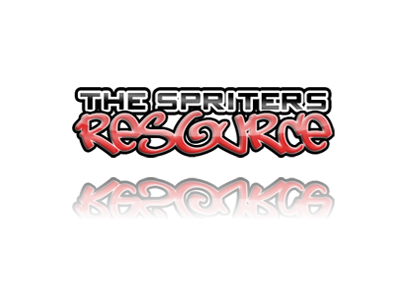

Credits
Click their icons to view their webpage!
Back to main page
- Hi! I made this website. I hope you like it! View the source code here!
Silver Sokolova
- Sprites, background, Mario, TTYD, etc
- Click their icon to view their website!
Nintendo


- Sprite rips (TTYD Switch Items)